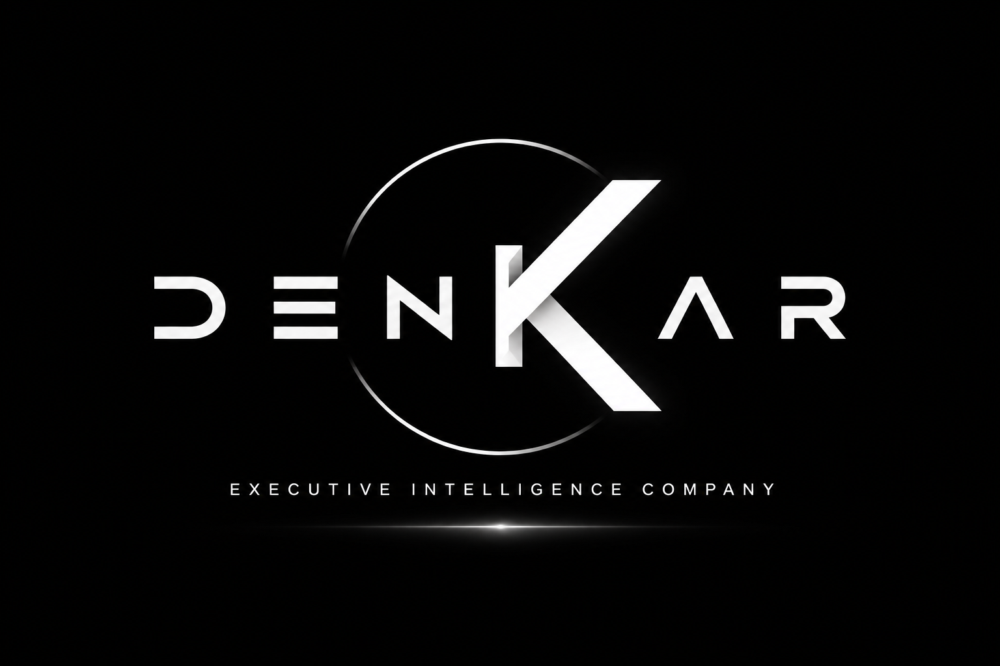

Próximamente · Consultar disponibilidad
Generadores eléctricos
Soluciones de generación temporal para obras, campamentos, mantenimiento y continuidad de faenas.

DENKARSoluciones flexibles de generación eléctrica e iluminación autónoma para proyectos y operaciones mineras en Chile.
Desarrollamos una oferta de arriendo de equipos orientada a continuidad operacional, flexibilidad y eficiencia energética en entornos mineros exigentes.
Alternativas de arriendo según las necesidades de cada proyecto.
Soluciones diseñadas para contratistas, proyectos y faenas.
Tecnologías solares y alternativas de generación para cada aplicación.
Soluciones de generación temporal para obras, campamentos, mantenimiento y continuidad de faenas.
Iluminación autónoma para áreas operativas, accesos, construcción y trabajos nocturnos.
DENKAR está desarrollando una nueva propuesta para la industria minera chilena, enfocada en arriendo de equipos de energía e iluminación. Nuestro objetivo es construir relaciones de largo plazo con clientes y fabricantes, con una mirada técnica, comercial y operacional.
Cuéntanos qué equipo necesitas, dónde operará y por cuánto tiempo. Revisaremos tu requerimiento y responderemos a la brevedad.